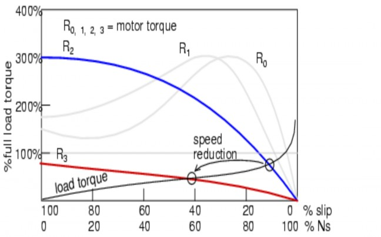

Introduction
A wound rotor induction motor or slip ring induction motor has a stator like the squirrel cage induction motor, but a rotor with insulated windings brought out via slip rings and brushes. However, no power is applied to the slip rings. Their sole purpose is to allow resistance to be placed in series with the rotor windings while starting.

Slip Ring Motor Characteristics:
A slip ring motor or a phase wound motor is an induction motor which can be started with full line voltage, applied across its stator terminals.
The rotor winding terminals of a wound rotor motor are connected to three slip-rings mounted on but insulated from the shaft. The leads, from the three brushes pressing on these slip-rings are taken to external resistances. At the time of start, the value of starting current is adjusted by adding up external resistance to its rotor circuit. As the rotor speeds up, the external resistance is decreased in steps so that motor torque tends to remain maximum during the accelerating period. Finally, under normal operation, the external resistance is fully cut off and the slip-rings are short-circuited so that motor now develop full load torque at low value of slip-rings.
The point to be noted is the “slip necessary to generate maximum torque is directly proportional to the rotor resistance.” So it is evident that the slip increases with increase in external resistance. With the above statements, let us discuss the different methods of speed control of slip ring induction motors:
1. Rotor Rheostat Control
2. Cascade Control
Speed Control by Rotor Rheostat Control

The external rheostat which is used for the starting purpose of these slip ring motors can be used for its speed control too. But the point to look into is the starting rheostat must be rated for “continuous” operation. With the same rheostat added to the rotor circuit, it is possible to regulate the speed of slip ring motors. The resistance is engaged maximum during starting and slowly cut-off to increase the speed of the motor. When running at full speed, if the need arises to reduce the speed, the resistance is slowly added up and thus speed reduces. To understand the speed control, let us look into the torque-slip relation given below. Torque T = S/R. Where S – is the slip of the motor, And R – is the Rotor resistance
It is evident from the above relation that as the rotor resistance increases, the torque decreases. But for a given load demand, the motor and thus the rotor has to supply the same torque without any decrease. So in order to maintain the torque constant, as the rotor resistance increases the slip also increases. This increase in slip is nothing but decrease in motor speed.

Rotor resistance controls speed of wound rotor induction motor

Disadvantages: But there are some disadvantages in this method of speed control. As the rotor resistance is increased, the “I^2 * R” losses also increases which in turn decreases the operating efficiency of the motor. It can be interpreted as the loss is directly proportional to reduction in speed. Since the losses are more, this method of speed reduction is used only for short period only.
Speed Control by Cascade Control

This method has two motors mounted on same shaft called in tandem or cascade operation.
The motor “A” which is connected to the mains is called as the main or the master motor. This motor has slip rings
mounted on its rotor shaft from which the motor “B” gets its supply from is called as auxiliary or the slave motor. It is to be noted that both the motors are mounted on same shaft. Thus it is evident that either the motors must run at same speed or it may have some gear arrangements.
The main motor is necessarily a slip ring induction motor but the auxiliary motor can be slip ring or squirrel cage induction motor.
For satisfactory operation, motor “A” must be phase wound/ slip ring type with the stator to rotor winding ratio of 1:1, so that in addition to cascade operation, they can also run from supply mains separately.
Since the supply for the slave motor is from the slip rings of the master motor, and it is forming a chain of sequential operation, the system is called as “Tandem or Cascade or Concatenation” operation.
Three or four different combinations are possible for attaining different speeds.
> Main motor may be alone on the mains, where Na = 120f/Pa, where Pa is the number of poles in motor “A.”
>Auxiliary or the slave motor running alone on the mains,
where Nb = 120f/Pb and
Pb is the number of poles in motor “B.”
>The combination may be in cascade operation. In this operation, the important point is that the phase rotation of the stator fields of the motors “A” and “B” must be in same direction. Thus the synchronous speed of this cascaded motor set is given by Nc = 120f/ (Pa + Pb).

- To assess your knowledge about the experiment by answering a questionnaire at the end of the experiment

1. Three phase Slip ring induction Motor
2. NI USB 6212 Data Acquisition card.
3. Voltage Transducer
4. RPM indicator
5. Solid State Relay


The quiz is included in the standalone application.

Procedure for the experiment is shown in the following video.